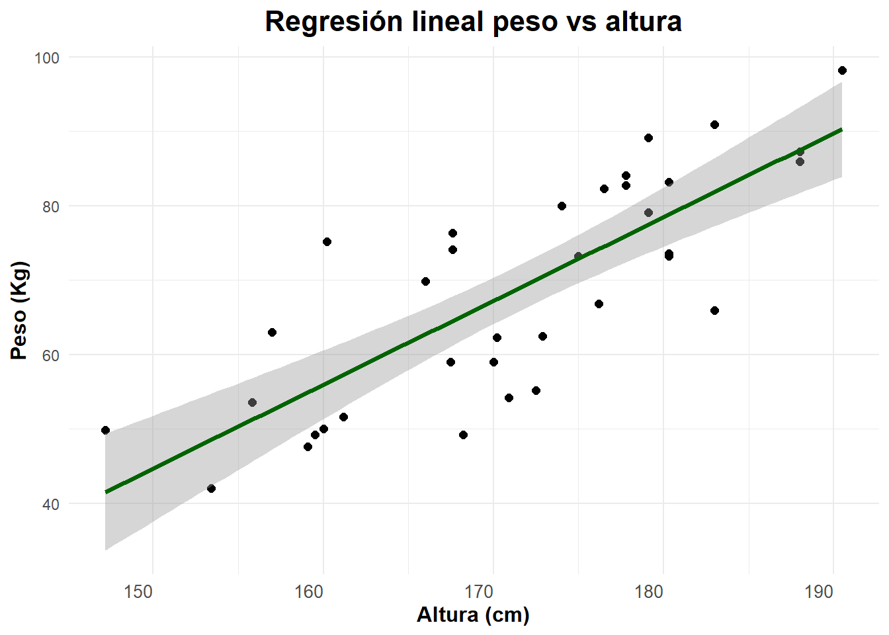
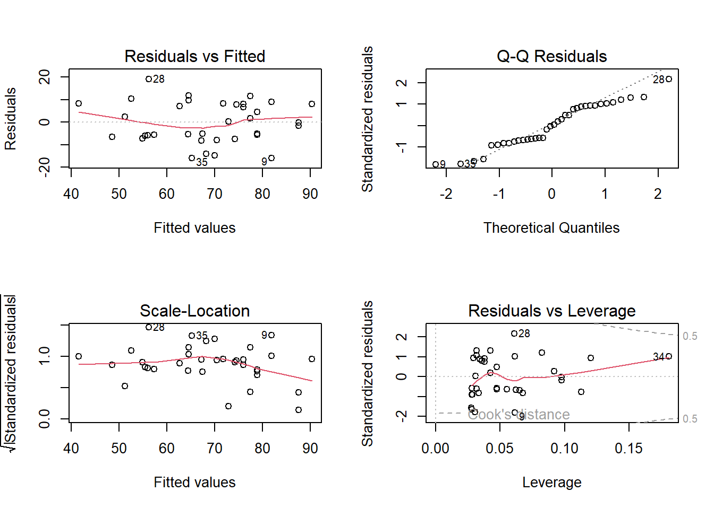

# Instalación y carga de paquetes
# Incluye ggplot2, dplyr, tidyr
if (!require("tidyverse")) install.packages("tidyverse")
# Se utiliza para establecer el directorio de trabajo
if (!require("car")) install.packages("car")14 Análisis de regresión lineal simple usando R
La regresión lineal es una técnica estadística utilizada para modelar la relación entre una variable dependiente (respuesta) y una o más variables independientes (predictoras). Este análisis permite predecir valores, evaluar relaciones y entender cómo las variables están conectadas.
En esta sección, se exploran dos tipos de regresión:
Regresión lineal simple: Relación entre una variable dependiente y una sola variable independiente.
Regresión lineal múltiple: Relación entre una variable dependiente y múltiples variables independientes.
14.1 Preparación del área de trabajo
Instalación y carga de los paquetes necesarios para desarrollar esta sección
14.2 Carga de datos
Para este análisis, se emplea un conjunto de datos de medidas corporales disponible en el siguiente enlace:
Datos de medidas corporales - GitHub.
El código para cargar los datos es el siguiente:
url <- 'https://raw.githubusercontent.com/fhernanb/datos/master/medidas_cuerpo'
datos <- read.table(file=url, header=TRUE) # Carga datos con encabezadoPosteriormente, se realiza una exploración inicial de los datos para comprender su estructura y contenido:
Para visualizar las primeras filas:
head(datos) edad peso altura sexo muneca biceps
1 43 87.3 188.0 Hombre 12.2 35.8
2 65 80.0 174.0 Hombre 12.0 35.0
3 45 82.3 176.5 Hombre 11.2 38.5
4 37 73.6 180.3 Hombre 11.2 32.2
5 55 74.1 167.6 Hombre 11.8 32.9
6 33 85.9 188.0 Hombre 12.4 38.5Para verificar la estructura de los datos:
str(datos)'data.frame': 36 obs. of 6 variables:
$ edad : int 43 65 45 37 55 33 25 35 28 26 ...
$ peso : num 87.3 80 82.3 73.6 74.1 85.9 73.2 76.3 65.9 90.9 ...
$ altura: num 188 174 176 180 168 ...
$ sexo : chr "Hombre" "Hombre" "Hombre" "Hombre" ...
$ muneca: num 12.2 12 11.2 11.2 11.8 12.4 10.6 11.3 10.2 12 ...
$ biceps: num 35.8 35 38.5 32.2 32.9 38.5 38.3 35 32.1 40.4 ...Las variables principales del conjunto de datos son:
altura: Altura de las personas (en cm).peso: Peso de las personas (en kg).sexo: Género de las personas (Hombre/Mujer).edad: Edad de las personas (en años).
14.3 Exploración inicial de los datos
Antes de ajustar un modelo de regresión, se realiza un análisis descriptivo para identificar patrones iniciales en las variables.
14.3.1 Gráfico de dispersión entre altura y peso
# Elaboración de un gráfico de dispersión entre altura y peso
ggplot(data = datos, aes(x = altura, y = peso)) +
geom_point(color = "black", size = 2) +
labs(title = "Relación altura - peso",
x = "Altura (cm)",
y = "Peso (Kg)")+
theme_minimal()+
theme(
plot.title = element_text(size = 16, face = "bold", hjust = 0.5),
axis.title = element_text(size = 12, face = "bold"),
axis.text.x = element_text( hjust = 1, size = 10),
plot.caption = element_text(hjust = 0, size = 8, color = "gray50")
)
Este gráfico permite observar una relación positiva entre altura y peso, donde a mayor altura, el peso tiende a ser mayor.
14.4 Regresión lineal simple
La regresión lineal simple se utiliza para modelar la relación entre una variable dependiente (peso) y una variable independiente (altura).
14.4.1 Ajuste del modelo
reg1 <- lm(peso ~ altura, data=datos)
summary(reg1)
Call:
lm(formula = peso ~ altura, data = datos)
Residuals:
Min 1Q Median 3Q Max
-15.9711 -6.2476 0.0899 7.9502 19.0448
Coefficients:
Estimate Std. Error t value Pr(>|t|)
(Intercept) -124.3890 25.1411 -4.948 2.01e-05 ***
altura 1.1270 0.1463 7.704 5.85e-09 ***
---
Signif. codes: 0 '***' 0.001 '**' 0.01 '*' 0.05 '.' 0.1 ' ' 1
Residual standard error: 9.104 on 34 degrees of freedom
Multiple R-squared: 0.6358, Adjusted R-squared: 0.6251
F-statistic: 59.36 on 1 and 34 DF, p-value: 5.853e-0914.4.2 Interpretación de los resultados
Los coeficientes del modelo (β0 y β1) indican, respectivamente, el valor promedio de
pesocuandoalturaes 0 y el cambio promedio enpesopor cada unidad adicional dealtura.El valor de R^2 muestra el porcentaje de variabilidad en
pesoexplicado poraltura.El p-valor asociado a los coeficientes permite evaluar la significancia estadística de la relación entre las variables.
14.4.3 Análisis de varianza (ANOVA)
anova(reg1)Analysis of Variance Table
Response: peso
Df Sum Sq Mean Sq F value Pr(>F)
altura 1 4919.9 4919.9 59.356 5.853e-09 ***
Residuals 34 2818.2 82.9
---
Signif. codes: 0 '***' 0.001 '**' 0.01 '*' 0.05 '.' 0.1 ' ' 1El análisis de varianza permite evaluar la significancia global del modelo. Un p-valor menor a 0.05 indica que el modelo es estadísticamente significativo.
14.4.4 Predicciones
Se generan predicciones para nuevos valores de altura utilizando el modelo ajustado:
nuevas_alturas <- data.frame(altura=seq(145, 195, 1.5)) # Secuencia de alturas
predicciones <- predict(reg1, nuevas_alturas)
round(predicciones, 2) # Resultados con 2 decimales 1 2 3 4 5 6 7 8 9 10 11 12 13
39.02 40.72 42.41 44.10 45.79 47.48 49.17 50.86 52.55 54.24 55.93 57.62 59.31
14 15 16 17 18 19 20 21 22 23 24 25 26
61.00 62.69 64.38 66.07 67.76 69.45 71.14 72.83 74.53 76.22 77.91 79.60 81.29
27 28 29 30 31 32 33 34
82.98 84.67 86.36 88.05 89.74 91.43 93.12 94.81 14.4.5 Visualización de la línea de regresión
ggplot(data = datos, aes(x = altura, y = peso)) +
geom_point(color = "black", size = 2) +
# Línea de tendencia con intervalo de confianza
geom_smooth(method = "lm", color = "darkgreen", linewidth = 1.2, se = TRUE) +
labs(title = "Regresión lineal peso vs altura",
x = "Altura (cm)",
y = "Peso (Kg)") +
theme_minimal() +
theme(
plot.title = element_text(size = 16, face = "bold", hjust = 0.5),
axis.title = element_text(size = 12, face = "bold"),
axis.text.x = element_text(hjust = 1, size = 10),
plot.caption = element_text(hjust = 0, size = 8, color = "gray50")
)
14.4.6 Verificación de supuestos del modelo
La regresión lineal simple asume:
Linealidad entre las variables.
Normalidad de los residuos.
Homocedasticidad (varianza constante de los residuos).
14.4.6.1 Gráficos diagnósticos
par(mfrow=c(2,2)) # Divide la ventana gráfica en 2x2
plot(reg1) # Genera gráficos diagnósticos
par(mfrow=c(1,1)) # Restaura la configuración gráfica14.4.6.2 Pruebas estadísticas
Para evaluar la normalidad de los residuos:
shapiro.test(resid(reg1))
Shapiro-Wilk normality test
data: resid(reg1)
W = 0.95039, p-value = 0.1075Para evaluar la homocedasticidad:
library(car)
ncvTest(reg1)Non-constant Variance Score Test
Variance formula: ~ fitted.values
Chisquare = 0.3162992, Df = 1, p = 0.5738414.5 Regresión lineal múltiple
La regresión lineal múltiple permite modelar la relación entre una variable dependiente y múltiples variables independientes. En este caso, se incluye la variable edad como predictor adicional.
14.5.1 Ajuste del modelo
reg2 <- lm(peso ~ altura + edad, data=datos)
summary(reg2)
Call:
lm(formula = peso ~ altura + edad, data = datos)
Residuals:
Min 1Q Median 3Q Max
-14.914 -5.171 -1.639 7.745 14.135
Coefficients:
Estimate Std. Error t value Pr(>|t|)
(Intercept) -114.2683 23.1613 -4.934 2.24e-05 ***
altura 0.9949 0.1411 7.053 4.51e-08 ***
edad 0.3986 0.1406 2.835 0.00777 **
---
Signif. codes: 0 '***' 0.001 '**' 0.01 '*' 0.05 '.' 0.1 ' ' 1
Residual standard error: 8.287 on 33 degrees of freedom
Multiple R-squared: 0.7071, Adjusted R-squared: 0.6894
F-statistic: 39.84 on 2 and 33 DF, p-value: 1.586e-0914.5.1.1 Interpretación de los resultados
Los coeficientes del modelo (β0,β1,β2) indican el efecto de cada predictor en peso, manteniendo las demás variables constantes.
El R2 ajustado refleja el porcentaje de variabilidad explicado por el modelo, considerando el número de predictores.
14.5.1.2 Comparación de modelos (ANOVA)
anova(reg1, reg2)Analysis of Variance Table
Model 1: peso ~ altura
Model 2: peso ~ altura + edad
Res.Df RSS Df Sum of Sq F Pr(>F)
1 34 2818.2
2 33 2266.3 1 551.87 8.0359 0.007769 **
---
Signif. codes: 0 '***' 0.001 '**' 0.01 '*' 0.05 '.' 0.1 ' ' 1Este análisis permite comparar la calidad de los modelos simple y múltiple. Un p-valor significativo indica que el modelo múltiple mejora la explicación de la variabilidad en peso.
14.5.1.3 Diagnóstico de multicolinealidad
vif(reg2) # Factor de Inflación de Varianza altura edad
1.122392 1.122392 Valores mayores a 4 sugieren problemas de multicolinealidad entre las variables predictoras.